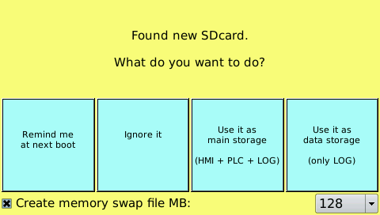

En los paneles TPAC1007_04 es posible insertar una tarjeta micro SD de hasta 64 GB (formato FAT con una sola partición). La primera vez que entre, aparecerá la siguiente pantalla:

Puede elegir entre 4 modos:
Remind me at next boot: esta pantalla se mostrará de nuevo la próxima vez que inicies el panel de operador.
Ignore it: ignora la inserción de la tarjeta y ya no mostrará esta pantalla en el siguiente reinicio dejando la tarjeta montada.
Use it as main storage (HMI+PLC+LOG): la tarjeta se utiliza como memoria para guardar la aplicación HMI, PLC incluyendo cualquier LOG.
ATENCIÓN: Si retira la tarjeta, la aplicación ya no estará presente en el panel de operador. Si mueve la tarjeta a otro panel del mismo modelo, se iniciará con la aplicación contenida en la tarjeta SD.
Use it as data storages (only LOG): La tarjeta se utiliza exclusivamente como memoria para LOGs.